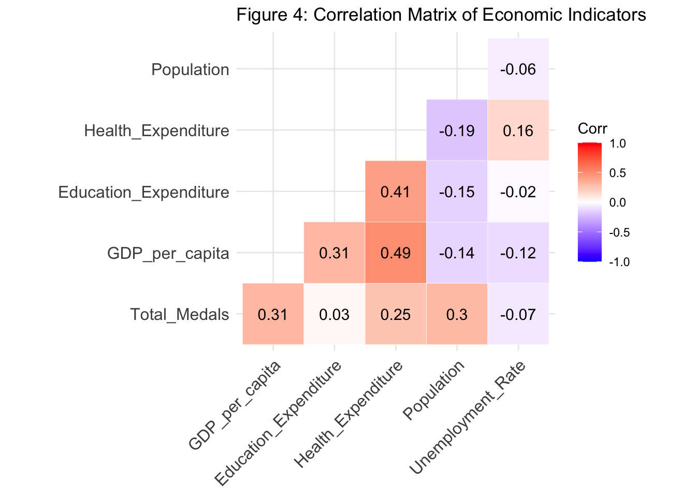

The Olympics is one of the world’s greatest sporting events that occurs once every 4 years, where athletes from across the globe compete for national pride and athletic excellence. While factors such as training and talent plays a significant role in an athlete’s success, economic conditions may also influence a country’s ability to produce medal-winning athletes. Wealthier countries may have better sports facilities, higher government investments in athletics, and greater access to elite coaching, which could contribute to higher Olympic medal counts. Thus, in this project, I would like to explore the relationship between economic indicators and medal counts in a country, aiming to identify which economic factors best predict the number of medals a country wins.
To investigate this, I will use two datasets:
1. Historical Olympic Medals Dataset
The Kaggle dataset,“Historical Olympic Medals Data (1994-2024)”, provides medal counts for each nation across multiple Olympic Games. This dataset includes information on the number of gold, silver, and bronze medals won by each country.
2. WorldBank Open Data API
This API is used to retrieve economic indicators such as GDP per capita, education expenditure, health expenditure, population size, and unemployment rate for each country per year. These indicators provide insight into a country’s overall economic strength, investment in human capital, and potential capacity to support athletic programs.
I will merge these two datasets to create one data frame that shows the total number of medals won and the economic performance of a country in a specific year.
So the research question that I will answer in this project is: “How do economic conditions influence a country’s success in the Olympics, and which indicators best predict medal performance”. This question will allow us to assess how different economic factors correlate with a country’s performance, providing insights into the role of economic success in global sports competition. Additionally, I am planning to add a predictive modeling section, using the 2022 Olympic data to do the following:
My hypothesis for the first part of the question: “How do economic conditions influence a country’s success in the Olympics” is that I expect country with high economic measures to perform well in the Olympics due to the investments and quality of training that the athletes can gain.
As mentioned in the introduction I used WorldBank Open Data API for economic indicators and Historical Olympic Medals Dataset for medal counts.
For the WorldBank Open Data API, I had to make API calls to gather the data. The API call had a limit of 500 so I had to make multiple GET requests to retrieve a complete dataset. Furthermore, the API was queried separately for each economic indicator (GDP per capita, Government expenditure on education, Health expenditure, Total population, Unemployment rate). Each dataset contained the CountryCode in ISO3 format, the Year, and the respective economic indicator for that country in the specified year. Then I merged each data by CountryCode and year.
The Olympic Medal Data, was a kaggle dataset so I downloaded it and read it as a datatable in R. The datasets contained CountryCode in NOC, the number of Gold, Silver, and Bronze medals won, and the total number of medals won by that country. Since there was one csv file per year, I merged the datasets by Country and Year. One note is that, the dataset only contained entries for countries that won at least one medal for that year. Since countries that did not win medals were absent from the dataset, I padded them with 0 medals to ensure accurate analysis.
After preparing both datasets, I merged them by matching the CountryCode from the World Bank dataset with the NOC codes from the Olympic dataset. However, NOC codes (CountryCode used in olympics) differ from ISO3 country codes, so for those countries whose codes did not map, I had to manually map the NOC code to a ISO3 code. (Could not do this for all countries as there were quite a number of them). Then I merged the two datasets together by Year and CountryCode. Lastly, I downloaded a dataset that maps ISO3 country code to Country Names using the WorldBank Open Data API and merged them to add a CountryName column for readability.
After acquiring the dataset, several preprocessing steps were performed to ensure the data was clean, properly formatted, and is ready for analysis.
2.2.1 Enhancing Readability and Removing Unnecessary Columns
To improve the interpretability of the dataset, the following changes were made:
Economic indicators obtained from the World Bank API were originally stored under their respective API codes. These were renamed for clarity. For example, “SE.XPD.TOTL.GD.ZS” was renamed to “Education_Expenditure”
Population values were originally recorded as raw counts which are too large to read and interpret efficiently. Thus, these values were converted into millions.
The new variable that I introduced is Season which takes value “Summer” if the olympic was held in the Summer and “Winter” if the olympics was held in the Winter. The reason why I introduced this variable is because, first, the total number of medals given out is less for Winter Olympics than for Summer Olympics, and because many countries excels in Winter Sports than others. In order to for the model to capture these changes, I have decided to introduce this variable.
The original Olympic dataset contained separate columns for gold, silver, and bronze medals. Since this analysis only considers total medal count, these columns were removed. Table 1 below presents the final list of variables in the cleaned dataset that has 9 columns and 892 rows:
| Table 1: Summary of Variables in the Dataset | ||
| Variables | Type | Description |
|---|---|---|
| CountryCode | character | ISO3 country code. |
| Year | numeric | Olympic event year. |
| Total_Medals | integer | Total medals won by the country in that year’s Olympics. |
| GDP_per_capita | numeric | Gross Domestic Product per capita in constant 2015 USD. |
| Education_Expenditure | numeric | Government expenditure on education as a percentage of GDP. |
| Health_Expenditure | numeric | Total health expenditure as a percentage of GDP. |
| Population | numeric | Total population of the country in that year (in millions). |
| Unemployment_Rate | numeric | Unemployment rate as a percentage of total labor force. |
| CountryName | character | Full country name. |
| Season | factor | Indicates whether the olympic was held in the summer or winter |
2.2.2 Handling NA observations
Our dataset initially contained a total of 357 NA values over 4 economic indicators: 35 in GDP per capita, 198 in Education Expenditure, 55 in Health Expenditure, and 12 in Unemployment Rate. However, removing them from the dataset would have significantly reduced the dataset, leading to a loss of valuable data. Therefore, instead of dropping all NA observations, I applied imputation to keep as much information as possible.
Imputation is the process of replacing missing values with estimated values based on the existing data. In this case, I used median imputation, where missing values for each economic indicator were replaced with the median value of that country. This approach is effective because the median is resistant to outliers, unlike the mean and it provides a reasonable estimate without introducing a huge artificial bias as values are not generated.
However, this approach is problematic when a country is missing a significant portion of its data for an economic indicator, as imputing in this scenario would introduce too much uncertainty. To address this, I decided to remove countries that had had more than 6 NA values in at least one economic indicator. I decided to use 6 as the threshold because there were 12 Olympic Games from 2000 to 2022, so if a country has more than 6 NA values, it means the country has more than half of its data missing for an economic indicator. This threshold ensures that only countries with a reasonable amount of data for imputation remain in the dataset.
This approach led me to remove a total of 10 countries from the dataset, such as North Korea, Colombia, and Channel Islands. And after removing the NA values I decided to perform imputation to minimize the loss of data.
2.2.3 Identifying Problematic Observations
To check for any problematic observations, I decided to look at the summary statistics for the economic indicator variables. As the economic indicator variables were floating point numbers, the summary presented the minimum, maximum, 1st & 3rd quadrant, median, and mean. Most of the values presented were in a reasonable range without any negative values. However, there were two numbers that struck me: maximum GDP per capita of 99,677.47 and maximum unemployment rate of 26.71 as these values were much larger than the 3rd quartile presented in the summary.
To take a deeper look at these values and any other extreme observations I decided to filter the following observations: entries with GDP per capita greater than 90,000 and unemployment rate greater than 20%. Filtering for GDP per capita > 90,000 showed that there was only one row of extreme observation: Ireland in 2022 with GDP per Capita of 99677.47. After checking with external sources, I confirmed that this value accurately reflects Ireland’s GDP. As a result, I decided to keep this observation.
Similarly, I decided to look at all of the data entries with an unemployment rate greater than 20%. This time there were a total of 18 rows, including countries such as Gabon, Greece, and Namibia to have an unemployment rate over 20% in certain years. After checking external sources, such as macrotrends.net, I came to the conclusion that these unemployment rates were legitimate values that occurred during economic crisis, so I decided to keep them in the dataset.
While reviewing the dataset, I also noticed that the maximum population of 1,425.42 million is extremely high. However, given that China and India both have populations exceeding 1.4 billion, this value is realistic.
Thus, while there were extreme points in the dataset, no data points were removed.
After cleaning and wrangling, summary statistics were computed for the updated dataset which contained 772 rows with 9 columns. The table below presents the minimum, first quartile (Q1), median, third quartile (Q3), mean, maximum, and number of missing values.
| Table 2: Summary Statistics of Numeric Variables | |||||||
| Variable | Min | 1st Quartile | Median | 3rd Quartile | Mean | Max | # of NAs |
|---|---|---|---|---|---|---|---|
| Total_Medals | 0.00 | 0.00 | 1.00 | 7.00 | 5.99 | 100.00 | 0 |
| GDP_per_capita | 253.69 | 2,923.33 | 8,567.91 | 31,419.75 | 17,153.68 | 99,677.47 | 0 |
| Education_Expenditure | 0.35 | 3.75 | 4.78 | 5.59 | 4.80 | 14.06 | 0 |
| Health_Expenditure | 1.79 | 4.66 | 6.77 | 8.86 | 6.83 | 23.09 | 0 |
| Population | 0.28 | 4.58 | 11.03 | 36.95 | 68.29 | 1,425.42 | 0 |
| Unemployment_Rate | 0.11 | 3.61 | 5.73 | 8.50 | 6.87 | 26.71 | 0 |
2.4.1 Top Performing Nations in Olympics
Figure 1 shows the top 10 countries with the highest total medal counts from 2000 to 2022. We see that China and Germany have a much higher highest medal count compared to the other countries, suggesting that these two nations have consistently ranked among the highest in total medals. Also, since Germany and China are considered to be “wealthy” countries with good economic performance, this result suggests that having a good economic performance could affect Olympic success.
It is worthy to note that countries such as France, Australia, and Japan also rank among the top medal winners, despite having smaller populations than countries like the United States or Russia, which are missing from this ranking. This suggests that factors beyond total population affect Olympic Success, hinting at the possibility that economic performance could be playing a factor here.
We also see that Norway, a relatively small country in terms of population, ranks in the top 10. This could be because Norway is a country that is extremely strong in Winter Sports. This reinforces the idea that while economic strength is important, other cultural and environmental factors also play a role in shaping a country’s Olympic success.
2.4.2 Relationship Between GDP Per Capita and Olympic Medals
Figure 3 examines the relationship between GDP per capita and total medals won, using a log scale for GDP per capita to account for its wide distribution across countries. The positive trend in the regression line suggests that, on average, countries with higher GDP per capita tend to win more Olympic medals. However, this correlation is relatively weak, with significant variation in medal counts among nations with similar GDP per capita levels. A few wealthy nations do not perform exceptionally well, while some countries with mid-tier GDP performing extremely well. This finding suggests that while economic resources help support Olympic success, they are not the sole determinant. And we have to also think about other factors such as specialization in specific events, or population.
2.4.3 Comparing Multiple Economic Indicators
Figure 3 extends the analysis on Figure 3 by examining the relationship between total medals and multiple economic indicators. We can see the following from plots: 1. Non-logged GDP per capita continues to show a positive but weak correlation with medal counts, reinforcing the earlier findings. 2. Health expenditure is also positively correlated with medals, suggesting that countries investing in public health and well-being may indirectly support better athlete performance. This makes sense, as a healthier population could contribute to better sports participation and training outcomes. 3. Education expenditure has little correlation with almost a flat line and countries with high medal counts only spend about 5% of its GDP which is approximately the same as the median in Table 2. This indicates that a country’s education budget/quality of education in a country does not correlate to Olympic success. 4. Population size has a strong positive trend between medal counts, which is expected. However, we do see a huge gap between countries with small and large populations, which is problematic. Furthemore, the countries with a large population have extremely large medal counts which could be skewing the trend. 5. We see a slight downward trend between unemployment rate and medal counts. Although this trend is very weak, we do see that countries with lower unemployment rates have higher medal counts. Furthermore, we do see that countries with high medal counts have an unemployment rate of 10% or less. As low unemployment rates are often see as an economic success, this further supports my proposed hypothesis.
2.4.4 Relationship Between Economic Indicators and Olympic Success

Figure 4 presents the correlation matrix of key economic indicators and Olympic medal counts. The correlation values range from -1 to 1, with positive value/red colour indicating a direct relationship, negative values/blue colour indicate an inverse relationship, and values near zero suggesting no correlation.
We see from the plot none of the variables shows an extremely strong positive correlation nor an extremely weak one. Suggesting that strong multicollinearity is not present.
Now, GDP Per Capita and Health Expenditure shows a Moderate Positive Correlation with Medal Count (r=0.31 and r = 0.27 respectively) meaning that countries with higher GDP per capita and higher health expenditure tend to win more medals, supporting the idea that economic strength contributes to Olympic success. However, this correlation is moderate, meaning that GDP and Health Expenditure does not solely determine a country’s success in the Olympics.
We see that Education Expenditure (r = 0.03) has almost no correlation between the share of GDP spent on education and Olympic performance. This suggests that general education spending does not directly translate to sports success. The same can be said to unemployment rate (r = -0.07) which suggests that a country’s employment status does not affect its Olympic success.
As part of the analysis, I will fit 3 models to predict the medal count via various economic measures. They are a Negative Binomial GLM, a gradient-boosted tree, and a random forest. A short description of each model is below
2.5.1 Negative Binomial GLM
Generalized Linear Models (GLMs) extend linear regression to incorporate non-Gaussian response variables by specifying a link function and a distribution from the exponential family. Since the response variable (total medal count) is count data with overdispersion (variance = 132.84 > mean = 5.85) a Negative Binomial GLM was used. This model generalizes a Poisson regression by introducing an overdispersion parameter to account for extra variability. A log link was used to model medal counts as a function of GDP per capita, log population, health and education expenditures, unemployment rate, and Olympic season.
2.5.2 Gradient-Boosted Trees
Gradient-Boosted Trees is an ensemble method that uses “K” additive weak base learners to minimize the residual error of the previous ensemble. XGBoost implements this using gradient descent on the loss function, which in this case was a Poisson loss appropriate for count data (objective = “count:poisson”). This allows the model to flexibly capture non-linearities and complex interactions between predictors. A grid search across combinations of learning rate ({0.05, 0.1, 0.3}) and max_depth ({3, 5, 7}) was used, with early stopping to prevent overfitting. The final model was trained using the best parameters from cross-validation.
2.5.3 Random Forest
Random Forest is an ensemble method that builds multiple decision trees on bootstrapped subsets of the training data and uses random feature selection at each split. Unlike bagging, which uses all features at each split, Random Forests increase diversity by selecting a random subset of predictors at each split, then choosing the best split among them. This decorrelation reduces variance and improves generalization, which should lead to better indication of how well economic factors predict olympic medal counts.
We implemented the model using caret::train() with 10-fold cross-validation, tuning only the mtry hyperparameter, which is the number of predictors considered at each split. The number of trees (1000) and minimum node size of 5 were fixed. The best model configuration was selected based on the lowest cross-validated RMSE.
To evaluate the model performance, I have split the dataset into three subsets: training set (data from 2000 - 2016), validation set (2018 and 2020), and test dataset (2020). Although I intended to use the 2024 data for testing, the World Bank API did not have economic data for that year. In addition, I have normalized population and GDP per Capita by taking the log to account for their large magnitudes compared to other variables.
2.6.1 Training Stage
All three models—the Negative Binomial GLM, XGBoost, and Random Forest—were initially trained on data from 2000 to 2016. For the Negative Binomial GLM, the training step involved directly fitting the model to the full training set using maximum likelihood estimation.
The XGBoost model was trained using a Poisson loss function, appropriate for count data. I implemented a grid search to tune key hyperparameters, including learning rate and tree depth, with 10-fold cross-validation and early stopping. Once the best hyperparameter combination was identified based on validation RMSE, a final model was retrained on the entire training dataset using those parameters.
The Random Forest model was trained using the caret package with 10-fold cross-validation to tune the number of randomly selected predictors at each split (mtry \(\in\) {2, 3, 4, 5}). The final Random Forest model used the best mtry value based on validation RMSE.
2.6.2 Validation Stage
For the Negative Binomial GLM, since there is no hyperparameter tuning, there is nothing we had to do at this stage.
The validation set was used to evaluate model performance and guide model selection. For the Negative Binomial GLM, no hyperparameter tuning was necessary, so validation involved computing the Root Mean Squared Error (RMSE) of the model’s predictions on the validation data. For XGBoost, the validation RMSEs from each fold of the 10-fold cross-validation were averaged to evaluate different combinations of parameters. The configuration with the lowest average RMSE was selected. Similarly, the Random Forest model’s validation performance was assessed across the different “mtry” values using RMSE, and the best-performing setting was selected for final testing. All three models were evaluated on the validation data, and their RMSEs were compared. This step ensured that the selected model configurations generalized relatively well to unseen data before proceeding to final testing.
2.6.3 Testing Stage
The final test set (2022 Winter Games) was used to evaluate the predictive performance of all three finalized models. Predictions were generated for each model on the test set, and both RMSE and Mean Absolute Error (MAE) were calculated to compare performance. Additionally, variable importance plots were created for both the XGBoost and Random Forest models to assess the relative influence of each predictor. For the Negative Binomial GLM, coefficient estimates and associated p-values were reported to facilitate interpretability. Scatterplots comparing predicted and actual medal counts were generated for each model to visualize performance. The model with the lowest test RMSE was selected as the best model for this analysis.
| Table 3: Model Performance Metrics | ||||
| RMSE and MAE for Training, Validation, and Test Sets | ||||
| Model | Training RMSE | Validation RMSE | Test RMSE | Test MAE |
|---|---|---|---|---|
| Negative Binomial | 8.345 | 8.670 | 6.173 | 3.001 |
| XGBoost | 3.111 | 6.774 | 4.549 | 2.303 |
| Random Forest | 3.388 | 16.411 | 5.719 | 3.167 |
Table 3 above shows the various RMSE values for different stages in the model processing stage.
The first thing we see is that the RMSE values are quite different across the three stages. For XGboost and Random Forest, RMSE is lowest for training, gets quite larger for validation, and then lower for testing. As models performing worse on unseen datasets are expected, and the errors are not too big, I can say that the model has generalized quite well.
Now, the reason why the model might be performing significantly worse on validation could be because the 2020 olympics was held right after COVID, making country’s do significantly worse economically, leading the models to potentially underestimate the medal counts.
When focusing on the relative accuracy, the table suggests taht XGBoost performs significantly better than the other models with the lowest RMSE and MAE values for all columns. This could be because its boosted trees can capture nonlinear saturation effects and interaction terms without manual specification. Then, RandomForest outperforms the Negative Binomial which is expected as the RandomForest is a machine learning algorithm with bagging, which can study the data better.
An interesting trend present here is that the RMSE for the GLM decreased in each stage of the process. This could be because GLM is strictly parametric, meaning that its variance is lower than the tree models’: it over-penalises the noisy COVID year but then delivers solid forecasts in 2022. Also, from the fact that the Season indicator variable has a large negative value, we can say that medal counts can not be fully explained by pure economics.
Now, when looking at the test and validation RMSE values, we see that there is not a large difference between the GLM and the other two models. While the XGboost and randomForests are black boxes, we can actually see intercept values for GLM. Thus in practice, the GLM might be preferred over the other two for interpretability.
The fact that a relatively simple Negative Binomial GLM performs as well as the accuracy of two non-linear machine-learning algorithms suggests that a handful of economic indicators could have captured most of the cross-national signal in Olympic success. The detailed coefficient analysis below therefore provides meaningful insight into which indicators matter most.
| Table 4: Coefficients for Negative-Binomial GLM | ||||
| Term | Estimate | Std. Error | Statistic | p-value |
|---|---|---|---|---|
| (Intercept) | −6.6268 | 0.5598 | −11.8385 | 0.0000 |
| Log_GDP_per_Capita | 0.6747 | 0.0589 | 11.4601 | 0.0000 |
| Log_Population | 0.5372 | 0.0459 | 11.7076 | 0.0000 |
| Health_Expenditure | 0.0655 | 0.0355 | 1.8434 | 0.0653 |
| Education_Expenditure | 0.1000 | 0.0474 | 2.1100 | 0.0349 |
| Unemployment_Rate | 0.0027 | 0.0158 | 0.1680 | 0.8666 |
| SeasonWinter | −1.7701 | 0.1390 | −12.7367 | 0.0000 |
In Table 4 above, we see the estimated value, standard error, test statistic, and p-values for each coefficient. First, we see that Log GDP per capita had the highest intercept of 0.6747 with a relatively low standard error. This means a 1 % rise in GDP per capita leads to a 0.68% increase in expected model counts, assuming other coefficients are held constant. This means that countries with high GDP per capita are likely to win more medals, aligning with the hypothesis that economic indicators are an essential factor of Olympic success.
Furthermore, “log_population” also has a large intercept of 0.5372, aligning with the convention that countries with larger populations do well in the olympics. We see that these two coefficients mentioned have a much larger estimated value compared to the other economic indicators meaning that these two factors could be the main factors that determines a country’s success.
We also see that other economic indicators such as education expenditure also have a positive correlation with medal counts. However, when looking at the p-values, we see that health expenditure and unemployment rate had values above 0.05. This means the two indicators are statistically insignificant (i.e. are not good predictors of medal counts). So, while some economic indicators, such as GDP per Capita, has a significant effect on medal count, not all economic factors actually affect a country’s Olympic success.
Above, we have two variable importance plots. One from the XGBoost (Figure 5) and another for RandomForest (Figure 6). We see that both plots are almost identical.
In both plots, log population and log GDP per Capita are the two variables with the largest importance values, with log population being first for both. This aligns with the results from Table 2, and further amplifies the fact that GDP per capita is indeed an essential economic factor at predicting medal counts.
From Figure 5, we see that the xgboost has ranked education expenditure, health expenditure, and unemployment rate with relatively low importance of 0.2. As these have a much lower importance than the other 3 variables presented and as XGboost was the best predicting model, it shows how not all economic indicators have a huge effect on a country’s Olympic Success.
It is important to note that while Negative Binomial GLM and XGboost did not have health expenditure as a significant/important variable, the RandomForest does as its 3rd most important variable. This shows how complicated the relationship between various economic factors and total medals are and how it might not just be a linear relationship.
Figure 7 above shows the predicted number of medal count plotted against the actual medal count for each model, which is the equivalent to the interactive visualization 1 on the website. All three plots show a dense stack of points at (0,0) showing that there is zero-inflation present in the data.
From the Negative Binomial plot, we see that almost all of the countries lie above the red linear 45 degrees, suggesting that the GLM is underestimating model count for almost all countries. However, for the other two models, we see that points lie relatively close to the red line indicating that they do a much better prediction of the data.
When going over to the interactive visualization, we see that all 3 of the graphs underestimate certain countries such as Canada and Germany. This reinforces the idea that economic factors are not the only indicator of Olympic success and that external factors do have a huge impact.
This study demonstrates that a country’s economic strength is one of the key drivers of Olympic medal performance. Across the three different models (the interpretable Negative-Binomial GLM and two tree-based machine learning models: Random Forest and XGBoost), log GDP per capita and log population consistently emerged as the most important predictors. In the GLM, a 1 % rise in GDP per capita increases the expected medal haul by 0.68 %, while a 1 % rise in population contributes a further 0.54 %. The two importance plots from Fugures 5 and 6 corroborated that ranking and show a steep drop-off to the next tier of variables. While GDP per capita clearly reflects a nation’s wealth and access to athletic infrastructure, population is not strictly an economic measure; instead, it likely captures the size of the talent pool and a country’s overall capacity to field athletes across many sports. Together, these two factors form a robust baseline for predicting Olympic success.
However, several other economic indicators, including health expenditure and unemployment rate, were found to be statistically insignificant or of low importance in the machine learning models. This suggests that not all economic factors are equally influential in shaping Olympic outcomes. For example, while one might expect higher health spending to correlate with better athlete performance, it may not directly impact the elite training infrastructure or sport-specific programs that lead to an excellent athlete. Similarly, macroeconomic conditions like unemployment may not meaningfully capture the focused investment required for Olympic achievement. In contrast, education expenditure did show a modest but statistically significant effect, indicating that long-term human capital investment may support athletic development in more subtle ways.
Although XGBoost achieved the lowest RMSE of 4.55 medals on the test set, and Random Forest and NB-GLM followed behind, all models did have notable prediction errors. As discussed in Section 3.4, many country’s model counts were under- or over-predicted. This reflects the fact that economic capacity, while essential, is not the sole determinant of Olympic success. Factors such as sport-specific investment strategies, cultural preferences, and geopolitical influences likely play a substantial role. These factors are not captured in broad economic indicators and point to the limits of prediction based solely on these metrics.
This analysis has several limitations. First, the World Bank indicators are yearly measures and can not fully reflect last-minute economic shifts or targeted sport expenditures. Second, imputation was used for a small number of missing values, which introduces uncertainty not reflected in standard errors. In addition to this, a small but insignificant number of countries were not included because of the lack of information in the API. For these reasons the dataset does not give a complete representation of the countries, indicating the limitations that exist within the dataset. Third, the medal dataset lists only nations that earned at least one medal in a given year. Although zeros were padded during the merging stage, the dataset underrepresents countries with extremely poor Olympics performance. Finally, many potentially relevant features such as host-nation effects, national sport policy, and training infrastructure were not included.
Copyright © 2025. Your Name Here.